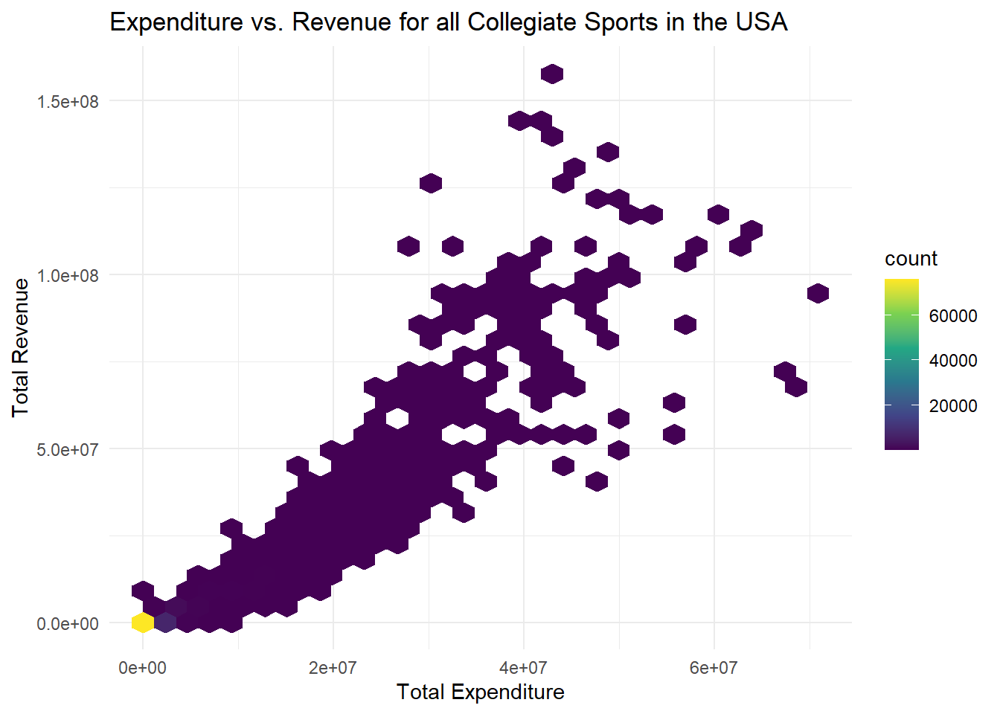
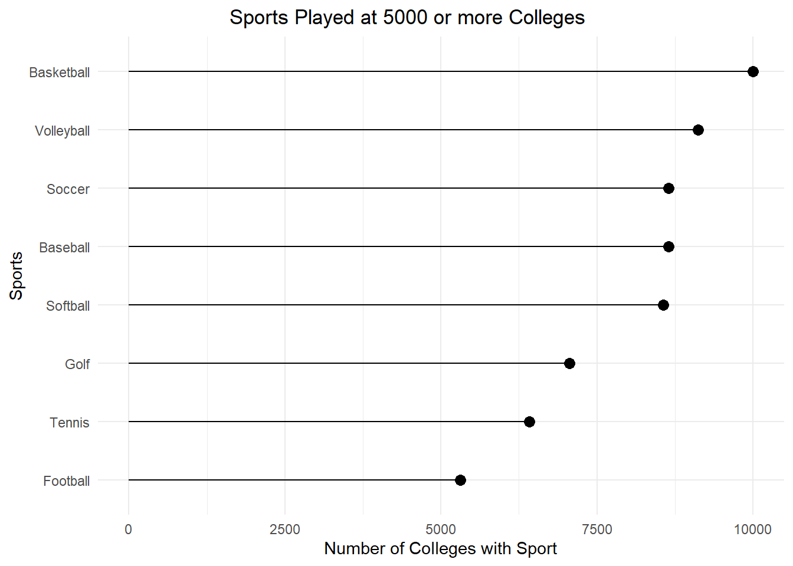
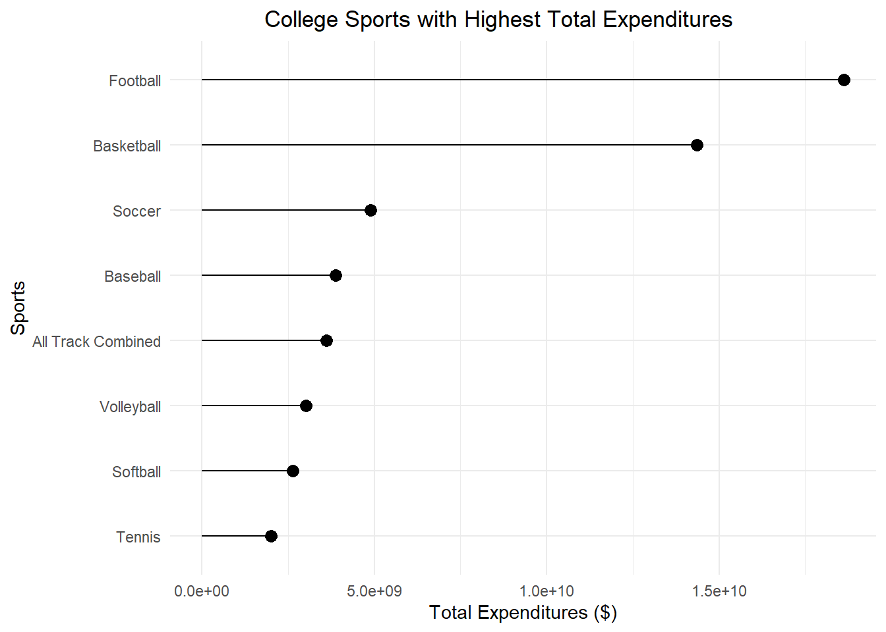

For my third blog post, I am working with a collegiate sports data set that contains 132,327 observations of 28 variables. I am most interested in the expenditure, revenue, and sports variables. The data is from 2015 to 2019. I got the data from the tidy tuesday GitHub and it is originally from the US Department of Education’s Equity in Athletics Data Analysis website. My questions of interest is which sports are the most expensive, which are played the most, and what is the general national trend of expenditure and revenue in college sports.
ggplot(data = sports_noNA, aes(x = total_exp_menwomen, y = total_rev_menwomen)) +geom_hex() +scale_fill_viridis_c() +theme_minimal() +labs(x ="Total Expenditure", y ="Total Revenue", title ="Expenditure vs. Revenue for all Collegiate Sports in the USA")

Summary
The plot above compares the total expenditure and total revenue for men and woman’s college sports teams in the USA. A large proportion of the schools fall close to zero in both categories (spending little and making little money from the school’s sports). However, there is a general positive trend as total expenditure increases, total revenue also increases. As expenditure gets higher the relationship gets weaker.
ggplot(data = pop_sports, aes(x = sports, y = nsports)) +geom_segment(aes(x = sports, xend = sports, y =0, yend = nsports)) +geom_point(size =3) +theme_minimal() +coord_flip() +labs(y ="Number of Colleges with Sport", x ="Sports", title ="Sports Played at 5000 or more Colleges") +theme(plot.title =element_text(hjust =0.4))

Summary
The plot above displays the 8 most popular sports played at American colleges from 2015 to 2019, all of which are played at 5000 or more colleges. The top 3 sports (Basketball, Volleyball, Soccer) are all co-ed with baseball, softball, and football being the only sports without both mens and womans teams. Basketball nearly doubles the number of football teams, while soccer, baseball, and soccer are played at close to the same number of colleges.
Visualization 3: Sports with Most Total Expendenture
ggplot(data = college_sports, aes(x = sports, y = total_exp_menwomen)) +geom_segment(aes(x = sports, xend = sports, y =0, yend = total_exp_menwomen)) +geom_point(size =3) +theme_minimal() +coord_flip() +labs(y ="Total Expenditures ($)", x ="Sports", title ="College Sports with Highest Total Expenditures") +theme(plot.title =element_text(hjust =0.4))

Summary
The plot above displays the top 8 college sports with highest total expenditures. Interestingly, although football was the eighth most played sport, it has the highest expenditure by a significant margin. Only basketball is close and it has almost double the teams, as we saw in the previous plot. The other 6 sports are fairly close together in expenditures and of the 8 most popular sports, 7 are in the top 8 in expenditures with Track replacing Golf.
Conclusion
One of the flaws in the way I approached the data was that I didn’t separate into men’s and woman’s sports because they were combined into one column if they both played the same sport. It was difficult to separate them because the data didn’t have a gender variable and placed them under the same column. If I had more time/additional data I would look into the differential in expenditure between men’s and woman’s sports at these colleges. I would also like to look at St. Lawrence’s data and how it compares on a national scale. Also, I think comparing within NCAA divisions would be interesting as well.
Class Ideas
For the first plot, that was an example of working with large data. Since there were so many observations I used geom_hex and a continuous scale to map the number of points to a count fill aesthetic. This made it easier to view and interpret the data, instead of looking at a bunch of points piled together with the same color. For the last two plots I chose line plots. Given the nature of the data of using 8 different levels to the sports variables and having a sum of the quantitative variables, it seemed the best way to compare the two. Since they were the same type of graphic it makes them easier to compare the two and make a possible connection between number of teams and expenditures.